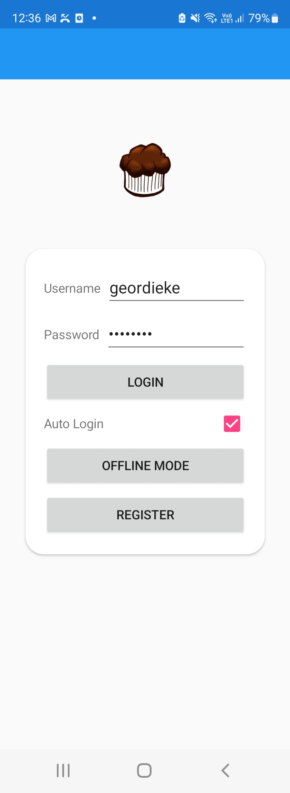
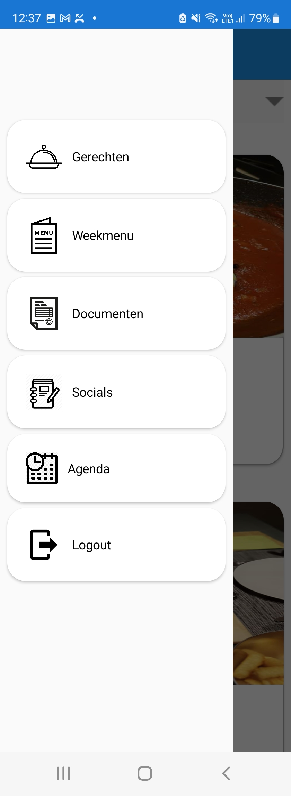

Login scherm
Via dit scherm kan je je inloggen, alles dat je aanmaakt wordt opgeslagen op dat account.
Er is een herinnerings functie waardoor je je account niet elke keer moet invullen.
Je hebt ook een offline knop om je weekmenu nog te kunnen bekijken als je geen internet zou hebben.
Gerechten tab
Deze app is multifunctioneel. Hieronder zie je een foto van de tab waarin ik gerechten opslaag dat ik samen met mijn vriendin maak.
De rechtse foto is hoe dat we een gerecht kunnen opslagen. Je kan attributen aan dit gerecht koppelen zoals wat type gerecht en bereidingstijd.
Menu scherm
Via het menuscherm kan je gemakkelijk aan alle pagina's die in de app staan.
